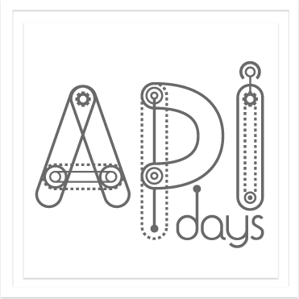

The Web 1.0 was readable, the Web 2.0 was social, now the web is programmable;through application programming interfaces, aka APIs.
Web APIs are a unique opportunity for companies, governments and
developers to both better organize the governance of their IT into a scalable
and flexible model, either leverage a complete ecosystem around the
organization, exchanging data through the web for trillion of applications on billion of devices.
Because each civilization has been described by the way it communicates and
makes exchanges, API are the beginning of a programmable civilization.